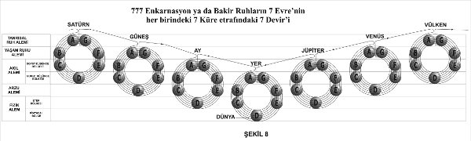

Başlangıç
520) “Yukarıda nasılsa aşağıda da öyledir” (ya da “aşağıda nasılsa yukarıda da öyledir”) hermetik ilkesiyle uyumlu olarak Güneş Sistemleri de doğar ve ölür ve de insanlar gibi faaliyet ve dinlenme döngülerinden geçerek yeniden doğarlar.
521) Doğanın her yerinde faal yaşamın alevlenmesini ve ölüp gitmesini görürüz. Her şey, sırasıyla Med ve Cezir, Gündüz ve Gece, Yaz ve Kış ile Yaşam ve Ölüme benzer.
522) Bir Tezâhür Günü’nün (yaratım günü) başlangıcında, (Batı’da Tanrı adıyla, dünyânın diğer bölgelerinde ise başka adlarla ifade edilen) büyük bir Varlığın, Kendisini uzayın Kendi seçtiği belli bir bölgesine sınırladığı öğretilir. Burada O, çoğaltılmış öz-bilincin evrimi için bir Güneş Sistemi yaratmıştır. (Bakınız Şekil 6)
523) O, Kendi Varlığında çok sayıda görkemli Hiyerarşi içerir. Bu Hiyerarşiler bizim kavramlarımıza göre ifade edilemeyecek ölçüde büyük ruhsal güç ve görkem sahibidirler. Ve de aynı Varlığın daha önceki tezâhürlerinin meyveleridirler. Aynı şekilde O’nda gelişimin aşağıya doğru alçalan evrelerinde varlıklar da bulunurlar.

En düşük evrelerdeki varlıklar, insanlığın şimdiki bilinç seviyesine ulaşmamış varlıklar da vardır. Onlar, evrimlerini bizim Sistemimizde tamamlayamayacaklar. Tanrı’da, yâni bu büyük ve kollektif Varlıkta, her zekâ seviyesinden ve her bilinç seviyesinden varlıklar bulunur. Bu seviyeler, Her şeyi Bilme seviyesinden başlar, en derin trans hâlinden daha derin bilinçsizlik seviyesine kadar iner.
524) Şu anda ilgilendiğimiz tezâhür dönemi boyunca çeşitli derecelerden bu varlıklar, bu varoluş döneminin başında sahip oldukları deneyimi arttırmaya çalışırlar. Önceki varoluşlarında en yüksek bilinç seviyesine erişmiş olanlar, henüz hiç bilinç geliştirmemiş olanlar üzerinde çalışırlar. Bu ilk grup, ikinci gruptakilerin içinde bir öz-bilinç hâli uyandırır ve bu durum da onların kendilerini geliştirmeye devam edebilmelerini sağlarlar. Evrimlerine daha önceki bir Tezâhür Gününde başlamış, ancak çok ileriye gidememiş olanlar, şimdi bu işlerine devam ederler. Bu, bizim her sabah günlük işimize, bir önceki akşam bıraktığımız yerden devam etmemize benzer.
525) Ancak bu çeşitli Varlıkların tümü, evrimlerine yeni bir tezâhürün ilk aşamalarında hemen başlayamazlar. Onlardan bazıları, evrimlerinin devamı için gerekli koşulları kendilerinden ileride olanların yaratmalarını beklerler. Doğada hiçbir işlem birdenbire olup bitmez. Her şey, olağanüstü yavaş bir açılım ve olağanüstü yavaş meydana gelse de kesinlikle nihai mükemmelliğe erişmeyi hedefleyen bir gelişmedir. Nasıl insanın yaşamında ilerleyen aşamalar –çocukluk, gençlik, yetişkinlik ve yaşlılık- varsa makrokozmos’ta da, mikrokozmik yaşamın çeşitli dönemlerine karşılık gelen farklı aşamaları buluruz.
526) Bir çocuk, babalık veya annelik görevlerini üstlenemez. Henüz gelişmemiş zihinsel ve fiziksel yetileri onun böyle bir işi yapmasını olanaksız kılar. Aynı şey, az gelişmiş olanlar için de tezâhür döneminin başlangıcında geçerlidir. Evrimlerinde daha yükseğe erişmiş olanlar, onlar için uygun koşulları hazırlayana dek beklemek zorundadırlar. Evrim yolundaki varlığın zekâ seviyesi ne kadar düşükse, dışarıdan yardıma o kadar çok muhtaçtır.
527) İşte en yüksek Varlıklar, yâni en ileri derecede evrimleşmiş olanlar başlangıçta, en derin bilinçsizlik seviyesine sahip olanlar üzerinde böyle çalışırlar. Yüksek Varlıklar bu işi daha sonra biraz gelişmiş varlıklara devrederler; çünkü bu varlıklar da artık bu işi daha ileri götürebilecek durumdadırlar. En sonunda öz-bilinç uyandırılır. Gelişen yaşam, İnsan olmuştur.
528) Öz-bilinçli kişisel Ego onun varlığına girdiği andan itibaren varlık, artık dışarıdan yardım almadan devam etmek ve bilincini genişletmek zorundadır. Artık dış öğretmenlerin yerini deneyim ve düşünce alır ve kişinin edinebileceği şan, güç ve ihtişamın sınırı yoktur.
529) Öz-bilincin kazanıldığı ve Rûhun insanda tezâhür edebilmesini sağlayan araçların yapıldığı zaman dönemine “İnvolüsyon” (involution) denir. Bu dönemden sonra gelen ve bireysel insan varlığının öz-bilincini, tanrısal Her şeyi bilme durumuna geliştirdiği yaşam dönemine de “Evrim” (evolution) denir.
530) Gelişen varlığın içinde bulunan güç, evrimi tam anlamıyla gerçekleştirir. Bu güç sayesinde evrim, sadece tohumda varolan gizil olasılıkların açılımı olmaktan çıkar. Ve bu güç, her bir bireyin evrimini, diğer bireylerin evriminden farklı kılar. Ayrıca orijinallik unsurunu sağlar. Bu güç, yaratıcı yeteneklere faaliyet alanı sağlar. Gelişen varlık, bir Tanrı olabilmek için bu yaratıcı yeteneğini ilerletmelidir. Bu güç, “Dehâ” olarak adlandırılır ve önceden açıklandığı gibi “Epigenesis” (hücreden yaratım) olarak tezâhür eder.
531) Modern zamanların ileri felsefelerinin çoğu, involüsyon ve evrimi kabul etmektedirler. Bilim ise yalnızca evrimi kabul eder. Çünkü bilim, tezâhürün yalnızca Form kısmıyla ilgilenir. İnvolüsyon ise yaşam tarafına aittir. Fakat en ileri bilimadamları Epigenesis’i kanıtlanabilir bir gerçek olarak görmektedirler. Gülhaç Evren Görüşü; Epigenesis, İnvolüsyon ve Evrimi birleştirir. Çünkü bu görüş, ait olduğumuz Sistemin geçmişteki, şimdiki ve gelecekteki gelişimini tam olarak anlayabilmek için bunu gerekli olarak görmektedir.
Yedi Âlem
532) Bir Evrenin inşasının nasıl olduğunu göstermek için basit bir örnek verebiliriz. Varsayalım ki bir adam, içinde yaşamak için bir ev inşa ettirmek istiyor. O, öncelikle ev için uygun bir yer seçecek ve sonra da evi inşa etme işine geçecektir. Adam evi belli amaçlarla kullanmak için çeşitli odalara bölecektir. Bu odalardan bir mutfak, bir yemek odası, yatak odaları ve banyo yapacaktır. Ve daha sonra tüm bunları, amaçlarına uygun olarak kullanılabilmeleri için uygun şekilde döşeyecektir.
533) Tanrı, yaratmayı dilediğinde uzayda uygun bir yer seçer ve orasını Aurası ile doldurur. Bu uzay kısmının kök-maddesinin her atomuna O’nun yaşamı nüfûz eder. Bu şekilde her bir ayrı atomda gizil halde bulunan faaliyet uyandırılır.
534) Bu Kozmik Kök-madde, Evrensel Rûhun negatif kutbunun bir ifâdesidir. Bizim Tanrı dediğimiz (ve rûhlar olarak bir parçası olduğumuz) büyük Yaratıcı Varlık ise aynı Evrensel Mutlak Rûhun pozitif enerjisinin bir ifadesidir. Birinin diğeri üzerindeki çalışmasıyla Fizik Âlemde etrafımızda gördüğümüz her şey meydana gelmiştir. Okyanuslar, Yer ve kendisini maden, bitki, hayvan ve insan formları olarak açığa vurmuş her şey, bu negatif Rûh-maddeden fışkıran kristalleşmiş uzaydır. Bu Rûh-madde, Varoluşun başlangıcında tek başına vardı. Sivrisineğin sert ve katı evinin, onun yumuşak bedeninin katılaşmış sıvılarından yapıldığından ne kadar eminsek, tüm formların, Rûhun negatif kutbu etrafındaki kristalleşmeler olduklarından da o kadar eminiz.
535) Tanrı, Kendi Küre’sinin yakınındaki Kozmik Kök-maddeyi Kendisine çeker. Böylece oluşan evrenin içindeki madde, uzayda Güneş Sistemleri arasındaki boşlukta bulunan maddeden daha yoğun hâle gelir.
536) Tanrı bu şekilde, içinde oturacağı maddeyi hazırladıktan sonra onda düzen kurar. Sistemin her bir parçasına O’nun bilinci nüfûz etmiştir, fakat her bir parçada farklı bir bilinç ifadesi bulunur. Kozmik Kök-madde çeşitli titreşim oranlarına ayarlanmıştır ve bu yüzden kendi kısımlarında veya bölgelerinde farklı oluşumlara sahiptir.
537) Böylece görürüz ki, âlemler varolurlar ve evrimsel şema içerisinde farklı amaçlara hizmet etmek üzere düzenlenirler. Bu tıpkı Fizik Âlemdeki günlük yaşama hizmet etmek için evin odalarının farklı farklı düzenlenmesine benzer.
538) Yedi Âlemin varolduğunu daha önce görmüştük. Bu âlemlerin herbiri farklı bir “ritim” (measure) ve titreşim oranına sahiptir. En yoğun âlem olan Fizik Âlemdeki titreşimlerin hızı (ona her sâniyede yüzmilyonlarca ışık dalgası ulaşmasına karşın), kendisine en yakın âlem olan Arzu Âlemine göre bile çok çok küçüktür. Titreşimin ve onun hızının ne olduğu hakkında bir fikir edinmek için belki de en kolay yol, çok sıcak bir sobadan veya pencere kenarındaki kaloriferden çıkan ısı titreşimlerini gözlemektir.
539) Hiçbir zaman unutmamalıyız ki bu âlemler, Dünyâmızın diğer gezegenlerden ayrı olması gibi mekân veya mesafe olarak birbirlerinden ayrı değildirler. Bu âlemler, farklı yoğunluk ve titreşimdeki –tıpkı bizim Fizik Âlemimizdeki katı, sıvı ve gazlar gibi– maddenin halleridirler. Ve onlar, bir Yaratım gününün başlangıcında birdenbire yaratılmamışlardır ve onun sonuna dek de kalmayacaklardır. Fakat bir örümcek, ağındaki her bir ipi birbiri ardına nasıl örüyorsa, Tanrı da İçerisindeki âlemleri birbiri ardına kendisinden ayırır. Bu, O’nun uğraştığı evrim planındaki yeni koşullardan ortaya çıkan gereksinime göre olur. Böylece yedi Âlemin tamamı, bugünkü formlarına erişinceye dek derece derece ayrılmışlardır.
540) İlk önce en yüksek Âlemler yaratıldı. Ve de involüsyon, yaşamı formların inşası için yavaş yavaş hep daha yoğun maddeye getirmekle sorumlu olduğu için, ince âlemler de gittikçe yoğunlaşırlar ve Tanrı’nın içinde yeni Âlemler ayrışırlar. Bu Âlemler, Tanrı’yla yoğun âlemler arasında gerekli bağlantıyı oluştururlar. Tam zamanında en büyük yoğunluk noktasına, maddesel yaşamın en alt noktasına ulaşılır. Yaşam, ilerleyen evrimle birlikte bu noktadan yüksek Âlemlere doğru çıkmaya başlar. Bu da yoğun Âlemleri birer birer boş bir halde bırakır. Amaca ulaşılıp da özel bir Âlem yaratıldığında Tanrı, bu Âlemlere varlık veren ve onu devam ettiren İçindeki özel faaliyeti durdurarak, o âlemlerin artık gerekli olmayan varlığını sonlandırır.
541) En yüksek (en ince, en az yoğun, en eterik) Âlemler en önce yaratılırlar ve en son yokedilirler. Evrimimizin şu anki evresinin sürdüğü en yoğun üç âlem, diğerlerine göre geçicidir (fâni) ve rûhun maddeye dalmasına karşılık gelirler.
Yedi Evre
542) Evrim planı yedi büyük Tezâhür Evresi boyunca bu beş Âlemden geçilerek tamamlanır. Bu yedi dönemde bâkir Rûh veya gelişen yaşam, önce insan ve sonra da bir Tanrı olur.
543) Tezâhürün başlangıcında Tanrı, tıpkı bir alevden kıvılcımın ayrılması gibi kendisindeki bu bâkir rûhları ayırır. Bu ayırma işlemi O’ndan ayrılma şeklinde değil de O’nun içinde bölümlenme şeklinde olur. Alev ve ondan çıkan kıvılcım, aynı doğaya sahiptirler ve ikisi de kendilerinden alev yaratabilirler. Bu bâkir rûhlarda, onların Tanrısal Babasının tüm olasılıkları bulunmaktadır. Ve bu olasılıklara, özgür İrâde’nin tohumu da dahildir. Bu da bâkir rûhların, kendilerinde gizil olarak dahi bulunmayan yeni evreler meydana getirebilmelerine imkân verir. Gizil (latent) olasılıklar, dinamik güçlere ve evrim sırasında kullanılacak yetilere dönüştürülürler. Bu sırada bağımsız İrâde veya Epigenesis de yeni ve orijinal değişiklikler yaratırlar.
544) Bâkir Rûh, madde içindeki hac yolculuğuna başlamadan önce, Bâkir Rûhlar Âleminde bulunur. Bu âlem, yedi âlemden en yüksekte bulunan âleme en yakın olanıdır. Onun Tanrısal Bilinci vardır, ancak Öz-bilinci yoktur. Rûh gücü ve Yaratıcı Zekâ, evrim aracılığıyla edinilmesi gereken yetiler veya güçlerdir.
545) Bâkir Rûh, Tanrısal Rûh Âlemi’ne daldığında bu madde tarafından kör ve tamamen bilinçsiz hâle getirilir. Ve de o, en derin trans hâlindeki insan gibi dış koşullara karşı duyarsızdır. Bu bilinçsizlik hâli ilk evre boyunca sürer.
546) Bu rûh, İkinci Evre’de (Period) rüyâsız uyku hâline yükselir; Üçüncü Evre’de rüyâ hâline erişir ve Dördüncü Evre’nin şu anda bulunduğumuz ortasında da insanın tam uyanık bilincini edinir. Bu, yedi âlemin sadece en aşağısındakine âit bilinçtir. Bu Evre’nin kalan yarısında ve ileride erişeceğimiz üç Evre boyunca insan, bilinci bu Fizik Âlemin üstündeki altı âlemin tamamını kapsayacak şekilde genişletmelidir.
547) İnsan, inişi sırasında bu Âlemlerden geçerken enerjileri yüce Varlıklar tarafından yönetildi. Yüce varlıklar, bilinçsiz enerjisini içe yönlendirmede ona yardım ederek onun uygun araçları inşa etmesini sağladılar. En sonunda yeterince geliştiğinde ve gerekli bir enstrüman olan üçüz bedenle donandığında bu yüce Varlıklar, “onun gözlerini açtılar” ve onun bakışını dışa, Fizik Âlemin Kimyasal Bölgesine yönlendirdiler ki, enerjisi orayı fethetsin.
548) Kimyasal Bölgede yaptığı çalışmayla hazır olduğunda, ilerlemesinin sonraki basamağı, bilincin kapsamının Eter Bölgesine uzaması olacaktır. Bundan sonra da Arzu Âlemine ve hazır olunca da diğer âlemlere inecektir.
549) Gülhaç Literatüründe yedi Evre’nin isimleri aşağıdaki gibidir:
1) Satürn Evresi
2) Güneş Evresi
3) Ay Evresi
4) Yer Evresi
5) Jüpiter Evresi
6) Venüs Evresi
7) Vülken Evresi
550) Bu evreler, Yer’imizin birbirini takip eden Yeniden Doğuşlarıdır.
551) Yukarıda belirtilen Evrelerin, Yer gibi kendi yörüngelerinde güneş etrafında dönen gezegenlerle bir ilgisi olduğu düşünülmemelidir. Gerçekte bu gezegenlerle evreler arasında bir ilişki olmadığı ne kadar söylense azdır. Bu Evreler sadece bizim Dünyâ’mızın geçmişteki, şimdiki ve gelecekteki bedenlenmeleridir (enkarnasyon). Ve bu Evreler, Yer’in içinden geçtiği, geçmekte olduğu ve gelecekte geçeceği koşullardır.
552) İlk üç evre (Satürn, Güneş ve Ay Evreleri) geçildi. Şu anda dördüncü evre olan Yer Evresindeyiz. Gezegenimizin bu Yer Evresi tamamlandığında o ve biz, Tezâhür’ün yedi büyük Günü sona ermeden önce sırasıyla Jüpiter, Venüs ve Vülken Evrelerinden geçeceğiz. Ve de şu anda varolan her şey, dinlenmek için bir evre boyunca Mutlak’ın (Tanrı’nın) içine dalacak ve bu dinlenme evresinde de evriminin meyvelerini sindirecek. Ve sonra da başka bir Büyük Gün’ün şafağında, daha ileri ve daha yüksek bir gelişim için tekrar ortaya çıkacak.
553) Geride bıraktığımız üçbuçuk Evreyi, şimdiki araçlarımızı ve bilincimizi kazanmada harcadık. Kalan üçbuçuk evre ise bu araçların mükemmelleştirilmesi ve bilincimizin Her şeyi-Bilme’ye yakın bir hâle genişletilmesinde kullanılacak.
554) Bâkir Rûh tarafından bilinçsizlikten Her şeyi-Bilme’ye doğru yapılan yolculuk ve bu yolculuk esnasında onun gizil güçlerini, hareketli enerjiler şeklinde açığa çıkarması olağanüstü karmaşık bir süreçtir. Bu yüzden ilk olarak sadece konunun en kaba hatları verilecektir. Ancak çalışmamızda ilerledikçe, elimizden geldiği ölçüde resmi tamamlayarak detaylara gireceğiz. Öğrencinin dikkati özellikle, sunulan yeni fikirlerle verilen terimlerin tanımlarına yönelik olmalıdır. Bunları ciddiyetle ele alması ondan özellikle istenmektedir. Zira aynı fikir için eser boyunca, anlamayı kolaylaştırmak için bilinen ve bir tek sözcük kullanılmasına çalışılmıştır. Sözcük, nakledilen fikre olabildiğince uygun olabilecek şekilde seçilmiştir. Böylelikle farklı bir terminolojinin yaratabileceği karışıklığın önleneceği umulmaktadır. Terimlerin tanımına çok dikkatli bir şekilde eğilen ortalama bir zekâya sahip bir kişi, evrim şemasının en azından kaba hatlarının bilgisine erişebilir.
555) Her zeki birey bize göre, bu bilginin en büyük öneme sahip olduğunun farkındadır. Biz, doğa yasaları tarafından yönetilen bu âlemde yaşarız. Bu yasalara bağlı olarak yaşamak ve çalışmak zorundayız ve onları değiştirme gücüne sâhip değiliz. Eğer bu yasaları bilir ve onlarla akıllıca çalışırsak, bu doğa güçleri elektrik enerjisi ve buharın itme enerjisinde olduğu gibi bizim en değerli hizmetkârlarımız hâline gelirler. Öte taraftan eğer onları anlamaz ve câhilliğimizle onlara karşı çalışırsak, korkunç yıkımlara yolaçabilen en tehlikeli düşmanlarımız hâline gelirler.
556) Doğa, görünmeyen Tanrı’nın yalnızca görünür sembolüdür. Doğanın çalışma yöntemlerini ne kadar iyi bilirsek, onun sunduğu büyüme, güç, kölelikten kurtuluş ve ustalığa yükselme fırsatlarını da o kadar iyi kullanabileceğiz.